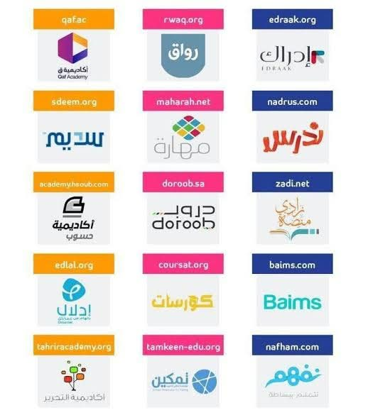

    <style>
        body {
            margin: 0;
            padding: 2rem;
            font-family: Arial, sans-serif;
            color: #17324d;
            background: #f3f7fb;
            text-align: center;
        }

        h1 {
            margin-bottom: 0.5rem;
            color: #164b78;
        }

        .gallery {
            display: grid;
            grid-template-columns: repeat(auto-fit, minmax(260px, 1fr));
            gap: 1.5rem;
            max-width: 1000px;
            margin: 2rem auto;
        }

        figure {
            margin: 0;
            padding: 1rem;
            background: #fff;
            border-radius: 12px;
            box-shadow: 0 4px 14px #17324d1a;
        }

        img {
            display: block;
            width: 100%;
            height: auto;
            border-radius: 8px;
        }

        figcaption {
            margin-top: 0.75rem;
            line-height: 1.7;
        }
    </style>
    <main>
        <h1>منصات التعلم الإلكتروني</h1>
        <p>صور توضيحية لبعض منصات ومواقع التعلم الإلكتروني.</p>

        <section class="gallery" aria-label="معرض صور منصات التعلم الإلكتروني">
            <figure>
                
                <figcaption>أمثلة على منصات التعلم الإلكتروني العربية والعالمية.</figcaption>
            </figure>
            <figure>
                
                <figcaption>مواقع تعليمية توفر دروسًا ومصادر للتعلم عبر الإنترنت.</figcaption>
            </figure>
        </section>
    </main>